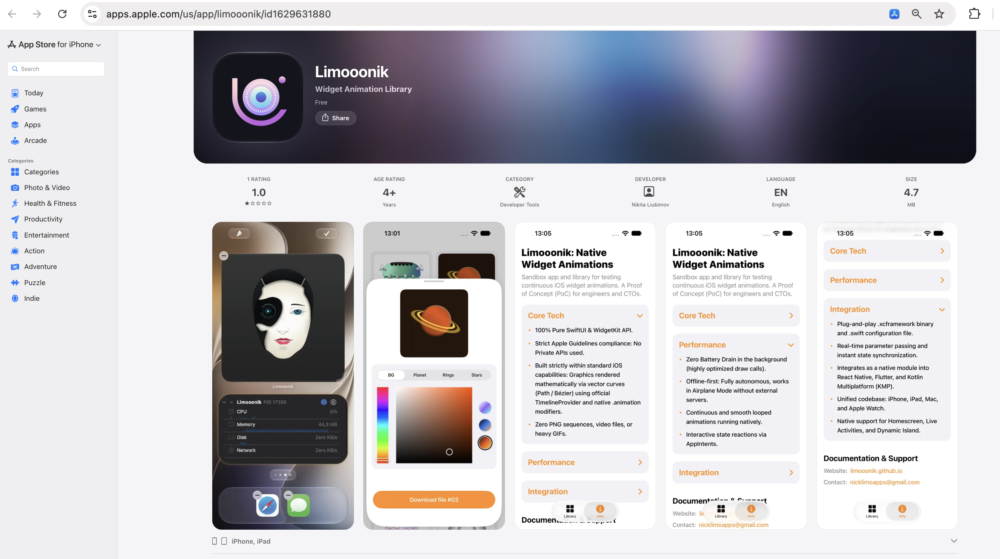
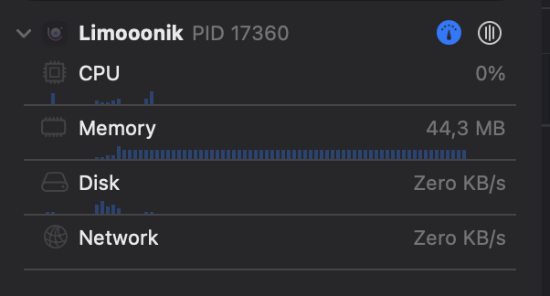

The Limooonik Precedent — How the Library Passed App Store Review.
For years, the mobile development industry has operated under the assumption that fluid, continuous animation on an iPhone screen is impossible due to strict system limitations. This stereotype forces product teams and designers to abandon interactive designs on the Homescreen. However, the official release of the Limooonik library in the App Store proves otherwise: the problem lies not in Apple's guidelines, but in a fundamentally flawed engineering approach.
Limooonik establishes an official precedent. It is the first available library of native animated widgets in the App Store designed for the HomeScreen, LockScreen, and Live Activities. It delivers production-ready, continuous smooth motion that engineers and product teams can legally implement in their commercial applications.

Designers and motion animators no longer need to argue with developers about the "impossibility" of transferring complex graphics to the desktop. When creating dynamic UI for WidgetKit, you must permanently forget about heavy GIFs, PNG sequences, video files, forced "clock mechanism" refreshes, Text(timerInterval) hacks, and attempting to pull real-time render data from servers.
All these outdated methods are workarounds that are aggressively blocked by the iOS architecture. Limooonik technology serves as a direct, native alternative to engines like Rive and Lottie, which Apple physically prevents from running inside the widget lifecycle.
An iOS widget operates under the strictest RAM allocation limits. Loading even a small array of images (PNG/GIF) or hidden media players triggers an immediate Jetsam Event—a system-level emergency process termination by the iOS kernel to free up memory. As a result, the widget freezes or displays a blank screen.
The Limooonik architecture entirely eliminates the probability of Jetsam Events. Because the graphics utilize zero raster assets, memory consumption is reduced to an absolute minimum, ensuring stable widget performance without the risk of system-forced crashes.
Crash prevention is achieved through a complete departure from files in favor of pure mathematics. Everything is based on vector Bézier curves (Path). In this architecture, the TimelineProvider is used exclusively to schedule key anchor points, rather than to force frame-by-frame refreshes.
All the heavy lifting of frame interpolation is offloaded to the CoreGraphics hardware level and built-in SwiftUI modifiers (like .animation). The operating system natively renders the morphing on the GPU, resulting in flawlessly smooth transitions.
The primary concern CTOs raise when implementing animation is energy consumption. This approach guarantees zero unnecessary battery drain in the background.
Furthermore, the architecture is strictly offline-first. All continuous animations, mathematical calculations, and interactive widget reactions function perfectly without an internet connection, even in Airplane Mode. This is exactly why the architecture successfully passes App Store Review: it fully complies with Apple’s guidelines without depleting the device's resources.

This is not a closed conceptual demo. Anyone can test these widgets on their personal device right now by downloading the Limooonik app from the App Store.
More importantly, developers have access to a unique export feature: you can download the raw binary file (.xcframework for widget animation) directly from the app into your phone's file system. You can then drag it into Xcode and test it on the Simulator or a real device. The unified codebase is deployment-ready for iPhone, iPad, Mac, and Apple Watch.
Download Limooonik on the App Store →Translating the conversation from engineering to product metrics: static widgets rapidly become a "blind spot" for users. A smoothly breathing, continuously animated vector widget acts as an active visual anchor on the Homescreen. It constantly draws the user's attention back to the app, directly increasing Retention and Daily Active Users (DAU).
The integration of AppIntents elevates this mechanism. Interactive elements allow users to manipulate states and alter the mathematical animation directly from the desktop with a single tap, without ever opening the host application.
Although the rendering core is written in strict native Swift, the library's implementation is not limited solely to iOS-native applications. These animations can be effortlessly integrated into cross-platform projects.
The native SwiftUI widget connects seamlessly via Method Channels to applications built on Flutter or React Native. This custom B2B engineering empowers cross-platform products to deliver a premium, native visual experience on Apple devices without compromising on framework choice.